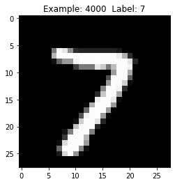
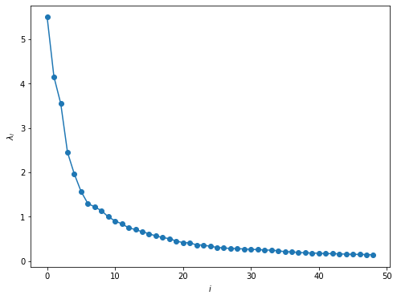
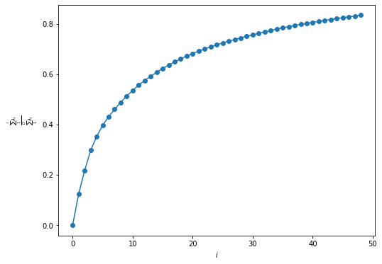
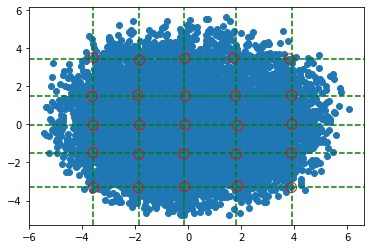
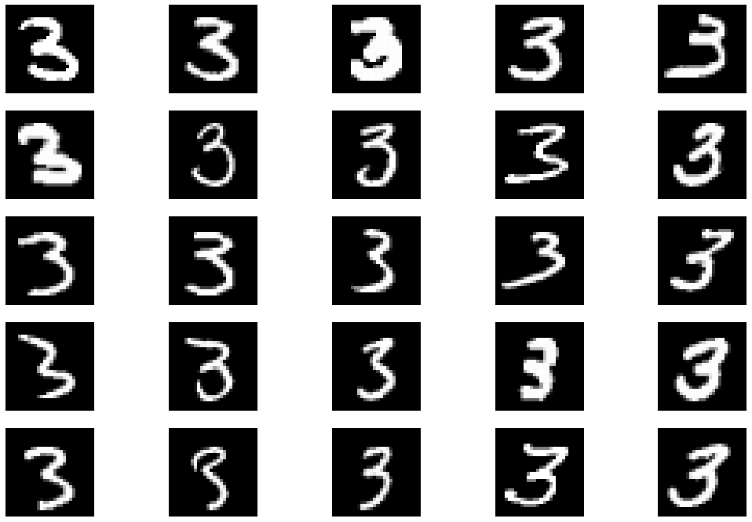
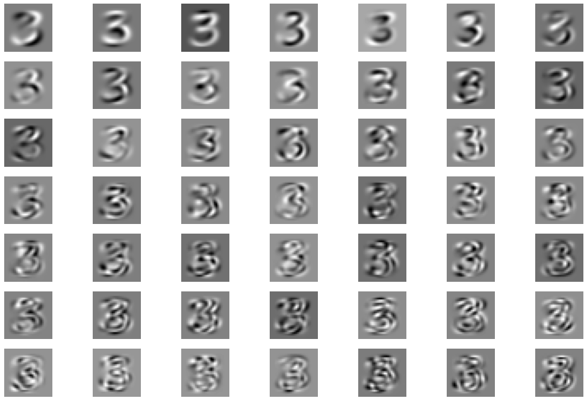
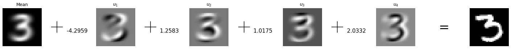
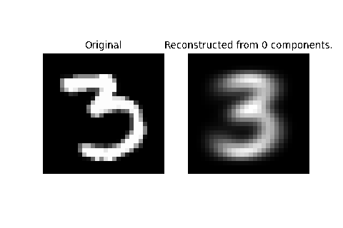

Dimensionality Reduction and PCA¶
Introduction¶
Feature extraction refers to a set of techniques to build derivative features from the original features present in the data set. The new features can be linear or non-linear combinations of the original ones. The new features aim to capture the patterns on the data, while removing noise and redundancy, improving the performance of learning algorithms. Also, some algorithms work better with particular representations of a data set.
In the case where the number of extracted features is less than the number of original features, we are said to be performing dimensionality reduction. A reduced number of dimensions alleviates the curse of dimensionality, improving learning performance, as well as reducing the size of data set, improving computation time.
Principal Component Analysis (PCA)¶
The most popular method for feature extraction is Principal Component Analysis (PCA). In simple terms, PCA searches for a rotation (orthogonal linear transformation) of the axes in data space (features) in which the transformed features are uncorrelated, i.e., the rotated covariance matrix is diagonal. The diagonal entries of the covariance matrix are, then, the variance along each of the new axes. Finally, dimensionality reduction is performed by dropping the features with the lowest variance, under the assumption that those are the least informative, or contribute less to the reconstruction error.
PCA through variance maximization¶
There are several ways to justify that specific transformation. Let’s to approach the problem directly, and find the set of orthogonal directions for which the variance is maximized. We will call this directions the loading vectors, the projections onto them the principal components, and we order them from larges variance to smallest. The first principal component is, thus, the direction along which the variance is larger.
To find the variance along an arbitrary direction \(w\), we first take the projection of each centered observation along \(w\), then take the variance. During this lecture, we will denote the centered data matrix by \(X\) to simplify notation.
So, to find the first principal component, we need to solve
Which is easier than it seems [1]. Let’s assume \(\Sigma\) is already diagonal, with entries \(\lambda_i\) along the diagonal, and \(\lambda_1 \geq \ldots \geq \lambda_d\). For any unit vector \(w\)
Then it’s easy to see that \(w^* = e_i\), the first basis versor. In the general case of a non-diagonal matrix \(\Sigma\), we can always apply the eigen-decomposition
where \(W\) is the orthogonal matrix with the eigenvectors of \(\Sigma\) as columns, and \(\Lambda\) is a diagonal matrix with . So, plugin the decomposition into the previous solution
from which we obtain the general loading \(w^* = W e_1\), the first column of \(W\), i.e., the first eigenvector of \(\Sigma\).
For the next loading vectors and components, we add the restriction that the new loading must be perpendicular to the previously vectors.
Finding \(w_{k}\) is analogous to finding \(w_1\), working in the reduced space after removing the previous \(k-1\), dimensions. So the solution must be also an eigenvector of \(\Sigma\). In fact, the whole set of eigenvectors of \(\Sigma\) define the directions of the principal components, and the eigenvalues are the variances along that very directions. As required, all the eigenvalues are positive, since the covariance matrix is positive semi-definite.
The principal components of a centered observation vector \(x_c\) are the coordinates of that vector in the space spanned by the eigenvectors, \(w_i^T x_c\), with the projected vector given by \(W^T x_{c}\), and the variance along that direction given by the corresponding eigenvalue \(\lambda\). The data matrix of the principal components is then the rotated centered data matrix,
To summarize, from an optimization point of view, we seek to maximize \(w^T\Sigma w\) subject to the restriction \(w^T w = 1\) [2]. Using Lagrange multipliers, we need to maximize \(w^T\Sigma w - \lambda (w^T w - 1)\). Differentiating with respect to \(w\) and equating the derivative to 0, we obtain
which is precisely the eigenproblem equation.
In the previous derivation we focused on PCA as a linear transformation that identifies directions of maximal variance. Next, we explore two derivations focusing on identifying useful sub-spaces to perform dimensionality reduction.
Minimizing the least-square reconstruction error¶
In the previous section, a natural interpretation of the procedure is that of fitting a multivariate Gaussian, defined by \(\mu\) and \(\Sigma\) to the data. The idea here is to reinterpret the same process as of fitting a linear model to the data, where the fitted hyperplane is of dimension \(q<d\). We follow the discussion in [3], section 14.5.
The equation of the fitting hyper-plane of dimension \(q<d\) is
where \(y\) is the q-dimensional vector with the reduced parametric coordinates of a point in the plane, \(\mu\) is the mean vector, a point in the plane, and \(W_{:q}\) is an orthogonal matrix with \(q\) unit vectors as columns. The \(q\) columns of \(W_{:q}\) are vectors parallel to the plane, so the product \(W_{:q}y\) is a linear combination of those vectors that explore the plane as we change the values of \(y\).
To fit the model, we seek to minimize the reconstruction error, by optimizing for \(\mu\), the set of coordinate vectors \(\{y_i\}\) and the matrix \(W_{:q}\)
Derivating with respect to \(\mu\) and \(y_{i}\) allows us to optimize jointly for (exercise)
As you may have already guessed, the optimal matrix \(W_{:q}\) will turn out to be the matrix of eigenvectors of \(\Sigma\). This makes the \(y_i\) the first \(q\) principal components of \(x\). Now we find \(W_{:q}\),
where \(\tilde{x}_i = x_i - \bar{x}\). The \(d\times d\) matrix \(W W^T\) is a projection matrix. It first projects each point \(\tilde{x}_i\) into the hyper-plane by obtaining each component along each column of \(W\). This a q-dimensional representation in the sub-space. Next, we move back into the original d-dimensional space by multiplying by \(W\), effectively taking a linear combination of the unit vectors, with each projected component as the weights.
Exercise: Show the minimizing the reconstruction error is equivalent as maximizing the variance along the first q directions of \(W_{:q}\). Use matrix algebra to transform into equivalent expressions.
The above exercise shows that the solution is the same as in the previous section, and the solution \(W_{:q}\) contains the first \(q\) eigenvectors of \(\Sigma\), as before.
We can connect the solution with another matrix decomposition, namely the Singular Value Decomposition (SVD) of the data matrix \(X\),
where \(U\) and \(W\) are \(n\times d\) and \(d\times d\) orthogonal matrices (if X is full rank) whose columns are called the left and right singular vectors respectively. \(D\) is \(d\times d\) diagonal matrix, whose entries are called the singular values, and are ordered so \(d_1 \geq \ldots \geq d_d\). The covariance matrix is \(\frac{1}{n}X^T X = \frac{1}{n}W D^T U^T U D W^T = W \frac{1}{n}D^T D W^T = W \Lambda W^T\), so we identify the singular values as square root of the eigenvalues of \(X^TX\), or \(\sqrt{n}\) times the standard deviations along the principal directions. The principal components matrix is given by \(XW = UDW^T W = UD\), and the optimal \(y_{i}\) are given by the first \(q\) columns of \(UD\), with each \(y_i\) being a row (observation).
So, how do we measure the quality of the reconstruction? We can calculate the fraction to the total variance retained by the reconstruction. The total variance along all the components, in either representation, can be found from the trace of the covariance matrix, \(\sum \sigma^2_i = tr(\Sigma) = tr(\Lambda)\), thus the fraction of the variance retained after projection into the q-dimensional subspace spanned by \(W_{:q}\) is
Finally, we can rewrite the fitted hyperplane equation as to make the expansion into PC more explicit,
Considerations¶
It is a good idea to standardize the data matrix before applying PCA, since the particular choice of units may artificially inflate one feature variance with respect to others, thus biasing the first principal component along that direction. This is equivalent to diagonalize the correlation matrix. Note that in this case, the trace of \(\Lambda\) is not the fraction of total variance, but just the number of variables used in the reconstruction, and to obtain the fraction of total variance corresponding to each PC, we need to divide the corresponding eigenvalue by \(d\).
Also, components associated with the smallest eigenvalues (variances), especially is the difference with previous eigenvalues is large, indicate possible linear relations in the data set. This small variance components can be regarded as random noise on top of a linear model.
Example: Handwritten digits¶
To illustrate PCA decomposition and dimensionality reduction we’ll use the MNIST dataset of handwritten digits. From deeplearningtutorial.net:
The MNIST dataset consists of handwritten digit images and it is divided in 60,000 examples for the training set and 10,000 examples for testing. In many papers as well as in this tutorial, the official training set of 60,000 is divided into an actual training set of 50,000 examples and 10,000 validation examples (for selecting hyper-parameters like learning rate and size of the model). All digit images have been size-normalized and centered in a fixed size image of 28 x 28 pixels. In the original dataset each pixel of the image is represented by a value between 0 and 255, where 0 is black, 255 is white and anything in between is a different shade of grey.
Here are some examples of MNIST digits:
For convenience we’ll the pickled dataset from deeplearningtutorial.net. The pickled file represents a tuple of 3 lists: the training set, the validation set and the testing set. Each of the three lists is a pair formed from a list of images and a list of class labels for each of the images. An image is represented as numpy 1-dimensional array of 784 (28 x 28) float values between 0 and 1 (0 stands for black, 1 for white). The labels are numbers between 0 and 9 indicating which digit the image represents.
First, import the modules we will use
import gzip
import pickle
import matplotlib.pyplot as plt
from mpl_toolkits.mplot3d import Axes3D
from itertools import product
Now, lets import the data set
# The pickle database is already formated as to output training,
# validation and test sets.
# We first uncompress on the fly to avoid keeping the uncompressed
# database on disk
pkl_file = gzip.open('Data/mnist.pkl.gz')
train_set, validation_set, test_set = pickle.load(pkl_file,
encoding='latin1')
pkl_file.close()
# Now we create a single data set from all three subsets
X = np.concatenate([train_set[0], validation_set[0], test_set[0]])
y = np.concatenate([train_set[1], validation_set[1], test_set[1]])
# Each row of a data matrix is a digit,
# the following function will be useful to visualize them.
def view_digit(example):
label = y[example]
image = X[example,:].reshape([28, 28])
plt.title('Example: %d Label: %d' % (example, label))
plt.imshow(image, cmap=plt.get_cmap('gray'))
plt.show()
view_digit(4000)

In this example, we will work exclusively with the digit 3 to visualize the PC.
X3 = X[y == 3]
In the assignments, you will implemented PCA from scratch using only numpy. Here we will demonstrate how to use the PCA class of sklearn.decomposition.
from sklearn.decomposition import PCA
# Lets keep only the first 49 principal components
# to make things quick.
# Initialize the class and obtain the components.
pca = PCA(n_components=49)
X_PCA = pca.fit_transform(X3)
Remember, the eigenvalues of the diagonalized covariance matrix represent the amount of variance each component explains. The sum of the first 49 eigenvalues, give us the total variance explained in the reduced dimensions. First we present a plot of the eigenvalues, next a plot of the accumulated variance explained up to component \(i\).
# Percentage of Variance Captured by 49 principal components
print("Fraction of variance explained by 49 principal components: ",
sum(pca.explained_variance_ratio_))
# Plot of the eigenvaluas of the covariance matrix
plt.figure(figsize=(8,6))
plt.plot(pca.explained_variance_, 'o-')
plt.ylabel(r'$\lambda_i$')
plt.xlabel(r'$i$');
Fraction of variance explained by 49 principal components: 0.8378539625555277

# Plot of the variance explained by the first n components
var_list = [sum(pca.explained_variance_ratio_[:i])
for i in range(len(pca.explained_variance_ratio_))]
plt.figure(figsize=(8,6))
plt.plot(list(range(len(pca.explained_variance_ratio_))),
var_list, '-o')
plt.xlabel(r'$i$')
plt.ylabel(r'$\frac{\sum_1^i\lambda_i}{\sum_1^D\lambda_i}$');

We now visualize the first two principal components together with key observations located at key quantiles along each component.
# Identify the 5%, 25%, 50%, 75%, 95% quantiles along both components
pc1 = X_PCA[:,0]
pc2 = X_PCA[:,1]
# Exact quantiles
qt1 = np.quantile(pc1, [0.05, 0.25, 0.5, 0.75, 0.95])
qt2 = np.quantile(pc2, [0.95, 0.75, 0.5, 0.25, 0.05])
# Plotting the first two principal components
plt.scatter(X_PCA[:,0], X_PCA[:,1])
# Quantile grid
for val in qt1:
plt.axvline(val, color='green', linestyle='--')
for val in qt2:
plt.axhline(val, color='green', linestyle='--')
# Nearest points to quantiles
def closest_node(node, nodes):
nodes = np.asarray(nodes)
dist_2 = np.sum((nodes - node)**2, axis=1)
return np.argmin(dist_2)
# Create list of nearest points starting at top left corner
examples = []
for (y, x) in product(qt2, qt1):
closest = closest_node((x, y), list(zip(pc1, pc2)))
examples.append(closest)
plt.scatter(pc1[closest], pc2[closest], facecolors='none', edgecolors='r', s=100)

We now visualize the observations circled in red in an array of the same shape as in the plot. Note how moving left to right amounts to tilt the digit to the right (PC1), while moving top to bottom changes the shape of the lower lobe.
examples = np.array(examples).reshape(5,5)
fig, ax = plt.subplots(5, 5, figsize=(18,12))
for i, j in product(range(5), range(5)):
image = X3[examples[i][j],:].reshape([28, 28])
ax[i][j].axis('off')
ax[i][j].imshow(image, cmap=plt.get_cmap('gray'))

To understand the effect of each component, we can think of each digit as a weighted sum of the unit vectors \(w_i\), with the weights given by the principal components of each observation. Each \(w_i\) can thus be interpreted as an image, and the weighted sum of such images reconstructs each digit. Below we plot the first 49 vectors \(w_i\).
# A grid of the first 49 components
fig, ax = plt.subplots(7, 7, figsize=(18,12))
l = 0
for i, j in product(range(7), range(7)):
base = pca.components_[l].reshape([28, 28])
ax[i][j].axis('off')
ax[i][j].imshow(base, cmap=plt.get_cmap('gray'))
l += 1

Focus in particular in the first two components and how they reflect the changes discussed before (tilt and shape).
To visualize the reconstruction, we begin with the mean and subsequently add the weighted components. Lets sum the first 3 components for a single example:
example = 100
X3_mean = np.mean(X3, axis=0)
fig, ax = plt.subplots(1, 11, figsize=(25,2))
ax[0].imshow(X3_mean.reshape([28,28]), cmap=plt.get_cmap('gray'))
ax[0].axis('off')
ax[0].set_title('Mean')
j = 0
for i in range(1, 9, 2):
ax[i].scatter(0, 0, color='k', marker='+', s=1000)
ax[i].text(0.05, -0.015, f' {X_PCA[example,j]:0.4f}', fontsize=15)
ax[i].set_xlim(-0.05, 0.2)
ax[i].axis('off')
j += 1
j = 1
for i in range(2, 9, 2):
ax[i].imshow(pca.components_[j-1].reshape([28,28]), cmap=plt.get_cmap('gray'))
ax[i].axis('off')
ax[i].set_title(rf'$u_{j}$')
j += 1
ax[9].text(0.05, -0.04, '=', fontsize=35)
ax[9].set_xlim(-0.05, 0.2)
ax[9].set_ylim(-0.2, 0.2)
ax[9].axis('off')
ax[10].imshow(X3[example,:].reshape([28,28]), cmap=plt.get_cmap('gray'))
ax[10].axis('off');

from matplotlib.animation import FuncAnimation
fig, ax = plt.subplots(1, 2)
def recons(m):
rec = np.array(X3_mean, copy=True)
vec = X_PCA[example, :m]
for i,l in enumerate(vec):
rec += l * pca.components_[i]
ax[0].imshow(X3[example,:].reshape([28,28]), cmap=plt.get_cmap('gray'))
ax[0].axis('off')
ax[0].set_title('Original')
ax[1].imshow(rec.reshape([28,28]), cmap=plt.get_cmap('gray'))
ax[1].set_title(f'Reconstructed from {m} components.')
ax[1].axis('off');
anim = FuncAnimation(fig, recons,
frames=np.arange(0, 50), interval=400)
anim.save('Figures/digit3_pca.gif', dpi=80, writer='imagemagick');

References¶
- 1
Brett Bernstein. Lecture 13: principal component analysis. URL: https://davidrosenberg.github.io/mlcourse/Archive/2017/Lectures/13-PCA-Notes_sol.pdf (visited on 2021-04-21).
- 2
Ian T Jolliffe and Jorge Cadima. Principal component analysis: a review and recent developments. Philosophical Transactions of the Royal Society A: Mathematical, Physical and Engineering Sciences, 374(2065):20150202, 2016.
- 3
Trevor Hastie, Robert Tibshirani, and Jerome Friedman. The elements of statistical learning: data mining, inference, and prediction. Springer Science & Business Media, 2009.